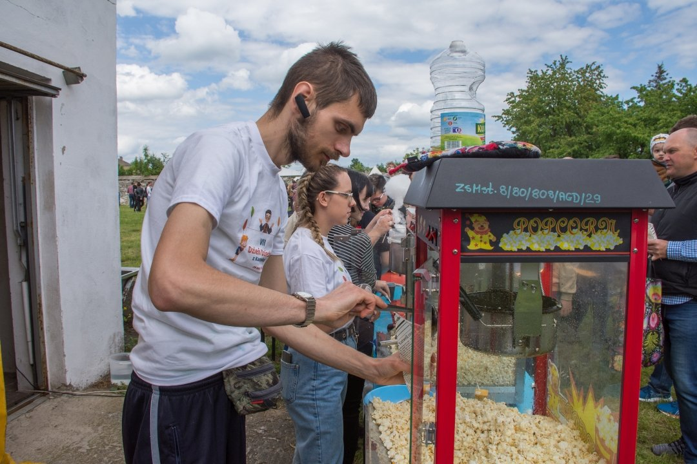

28.05.2022 - 29.05.2022 Festyn Parafialno-Gminny VII Dzień Dziecka z Kanonikami
Wolontariusz
Rozkładanie stelarza do namiotu
Przenoszenie ławek i stolików z salki katechetycznej
Przenoszenie i transport ławek i stolików ze Szkoły Podstawowej im. Tadeusza Kościuszki we Mstowie i Zespołu Szkolo-Przedszkolnego im. Jana Pawła II w Jaskrowie
Wbijanie palików do ogrodzenia, oddzielającego strefę dla jazdy quadem od tej ogólnodostępnej dla uczestników wydarzenia
Czyszczenie i konserwacja grilla
Przenoszenie fantów na loterię na stoisko
Przenoszenie maszyn do popcornu i waty cukrowej
Przenoszenie skrzynek z pieczywem do grilla
Przenoszenie worków węgla do grilla
Odbiór ciasta od członków Koła Gospodyń Wiejskich i wszystkich chętnych
Załadunek samochodu skrzynkami z pieczywem
Przenoszenie skrzynek z jabłkami
Przenoszenie i załadunek samochodu zgrzewkami z wodą mineralną
Przytwierdzanie worków na odpadki do stojaków
Zachęcanie do udziału w loterii wiernych opuszczających świątynię po Eucharystii
Przeniesienie stojaka z herbem powiatu częstochowskiego
Pomoc w wyładunku samochodu z dmuchańcami
Obsługa maszyny do popcornu  https://www.mstow.pl/media/_gallery/1575/285390904_3647209325403294_8983963265071777437_n.jpg
Obsługa maszyny do waty cukrowej
Obsługa maszyny do kawy
Służenie pomocą i radą uczestnikom festynu
Przeniesienie stolików i ławek do salki katechetycznej
Przeniesienie ławek pod budynek gospodarczy
Sprzątnięcie worków z odpadkami do kontenera
Sprzątnięcie stojaków na worki z odpadkami
10.2018 - 01.2019 Studenckie Koło Naukowe Teleinformatyki i Technik Multimedialnych
Wykonałem prezentację multimedialną na temat "Zamiana obrazu 2D (zdjęcie) na 3D (przestrzenne)" w programie, wchodzącym w skład pakietu biurowego Microsoft Office - Microsoft PowerPoint. To jest link do pliku PDF.

{kind=link}